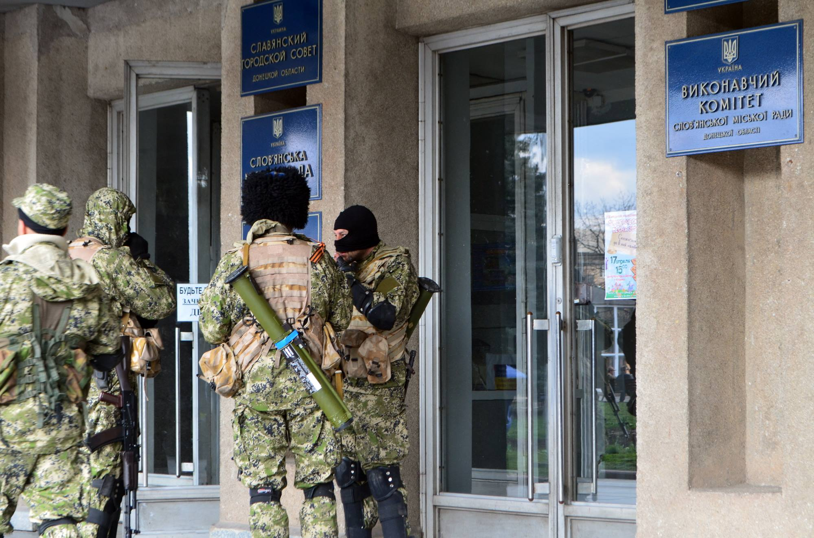
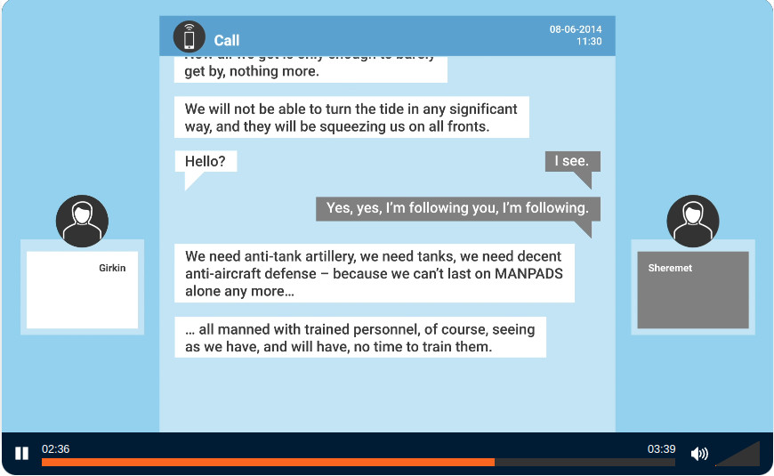

Photo: Jeroen Akkermans CC BY-NC-SA 2.0
Op 17 juli 2014 werd een Boeing 777 met vluchtnummer MH17 neergeschoten door een Russische luchtdoelraket boven Oekraïne. Aan boord waren 298 mensen. Er waren geen overlevenden.
De ramp vond plaats boven het oorlogsgebied tussen het Oekraïense leger en pro-Russische separatisten. Wie waren die separatisten en hoe kwamen ze aan een grond-luchtraket?
Gevecht in Oost-Oekraïne in 2014
De oorlog in Donbas is een agressie van Rusland tegen Oekraïne. Het begon in 2014 als reactie op de Oekraïense Revolutie van de Waardigheid. De revolutie ontwikkelde zich als een reeks vreedzame protesten, ook wel bekend als Euromaidan. De onrust ontstond over het Associatieverdrag met de Europese Unie.
Het Associatieverdrag tussen de Europese Unie en Oekraïne werd voorgesteld in 2012. De EU en Oekraïne zouden hun economisch beleid, wet- en regelgeving op één lijn brengen. Bovendien kwam er een vrijhandelsruimte tussen de EU en Oekraïne tot stand.
Het Oekraïense parlement had de overeenkomst goedgekeurd met een overweldigende meerderheid (315 van de 349 leden)[1], maar president Janoekovitsj weigerde, onder druk van Rusland, de overeenkomst te ondertekenen.
Janoekovitsj plotseling stopt de onderhandeling over het Associatieverdrag
Op 21 november 2013 begonnen de protesten op Maidan Nezalezhnosti (Onafhankelijkheidsplein) in Kiev. Demonstranten verzetten zich tegen corruptie, machtsmisbruik en schendingen van mensenrechten. Naar schatting tussen de één- en tweehonderdduizend demonstranten bezetten het Onafhankelijkheidsplein en veranderden het in een protestkamp. Het had keukens, EHBO-posten en omroepfaciliteiten, maar ook podia voor toespraken, lezingen, debatten en optredens.
Kroniek van de Euromaidan
Vanaf half januari 2014 namen de protesten toe als reactie op de nieuwe anti-protestwetten. Op 18, 19 en 20 februari braken zware gevechten uit tussen Maidan-activisten en de politie. Oekraïense speciale troepen (Berkoet) schoten op demonstranten, waarbij meer dan honderd mensen om het leven kwamen. Ook werden 7 politieagenten en 6 leden van Berkoet doodgeschoten door onbekende daders.[2]
Confrontaties tussen betogers en de politie in de Hroesjevsky-straat
Op 21 februari ondertekenden Janoekovitsj en leiders van de parlementaire oppositie een overeenkomst. De volgende dag vluchtte Janoekovitsj uit Kiev en dook twee dagen later op in Rusland. In de voormalige residentie van Janoekovitsj werden, samen met enorme rijkdom en luxe, documenten gevonden die wijdverbreide corruptie en belastingontduiking bevestigden.
Vondsten uit de residentie van Janoekovitsj
Op 27 februari 2014 werden ongemarkeerde Russische soldaten ingezet op het Krim-schiereiland. Ze namen snel de controle over de overheidsgebouwen van de Krim over, omsingelden Oekraïense militaire bases en blokkeerden het schiereiland. Rusland annexeerde de Krim op 18 maart 2014.
Soldaten zonder insignes op het Krim-schiereiland
Kort daarna brak er oorlog uit in de Donbas in Oost-Oekraïne. Op 12 april werd de strategische stad Sloviansk veroverd door vijftig zwaarbewapende militanten. Ze bezetten het bestuursgebouw en het politiebureau van de stad. De eenheid bestond uit de Russische strijdkrachten onder bevel van Igor Girkin [Russisch: Игорь Гиркин], ook wel bekend als Strelkov. Girkin was een kolonel van de Russische FSB (Federale Veiligheidsdienst). De troepen waren vanuit de Krim gestuurd en droegen geen insignes.

Soldaten bij het raadhuis van Sloviansk.
Door Yevgen Nasadyuk, CC BY-SA 3.0
Igor Girkin is ook bekend als de man achter het neerschieten van MH17. Aan het begin van de zomer van 2014 zei Girkin tegen de handlanger van Sergei Aksenov [Russisch: Сергей Аксёнов], het hoofd van de bezette Krim: "We hebben antitankartillerie nodig, we hebben tanks nodig, we hebben fatsoenlijke luchtverdediging nodig."

Getapt telefoongesprek waarin Igor Girkin vraagt om militair materieel. Bron: het Nederlandse Openbaar Ministerie
Op 23 juni 2014 verliet een BUK-luchtafweersysteem van de 53e brigade zijn basis vlak bij Koersk in Rusland. Op 25 juni trok het militaire konvooi door de stad Millerovo, 25 kilometer van de Oekraïense grens. Daarna werd het BUK-systeem over Oekraïens grondgebied vervoerd dat bezet was door pro-Russische separatisten. Op 17 juli arriveerde het in het dorp Pervomaiskyi.
Animatie van de route van BUK door het JIT
Op de ochtend van 17 juli 2014 ontvingen pro-Russische militanten inlichtingen over het vertrek van het Oekraïense transportvliegtuig An-26. Vanuit de buitenwijken van Pervomaiskyi lanceerden ze een BUK-raket op een luchtdoel. Girkin postte vervolgens op sociale media over een ‘ptichkopad’ (het vallen van vogels). Pas toen de militanten op de crashlocatie aankwamen, ontdekten ze dat ze een burgervliegtuig hadden neergeschoten.

Het bericht over ‘ptichkopad’. Bron: het Nederlandse Openbaar Ministerie
Op 9 maart 2020 heeft het Nederlandse Openbaar Ministerie vier mensen aangeklaagd voor moord in verband met het neerschieten van het vliegtuig: Igor Girkin, Sergej Doebinski [Russisch: Сергей Дубинский], Oleg Poelatov [Russisch: Олег Пулатов], en Leonid Chartsjenko [Russisch: Леонид Харченко].
MH17: Volgens het JIT zijn dit de vier verdachten
Op 17 november 2022 werden Girkin, Doebinski en Chartsjenko tot levenslang veroordeeld door de rechtbank Den Haag. Rusland weigerde hen uit te leveren.
Igor Girkin zit nu vast in de Russische gevangenis. Zijn aanklacht heeft niets met MH17 te maken, hij wordt beschuldigd van ‘aanzetten tot extremisme’ vanwege zijn kritiek op Vladimir Poetin.
Openbaar ministerie: MH17 vliegramp
Openbaar ministerie: Het strafdossier MH17
Dit verhaal komt binnenkort uit op Free Russia NL youtube channel


[1]Parliament passes statement on Ukraine’s aspirations for European integration, Kyiv Post, geraadpleegd op 15 juli 2024
[2]Accountability for killings in Ukraine from January 2014 to May 2016, Annex A, Table 2. Office of the United Nations High Commissioner for Human Rights, geraadpleegd op 15 juli 2024